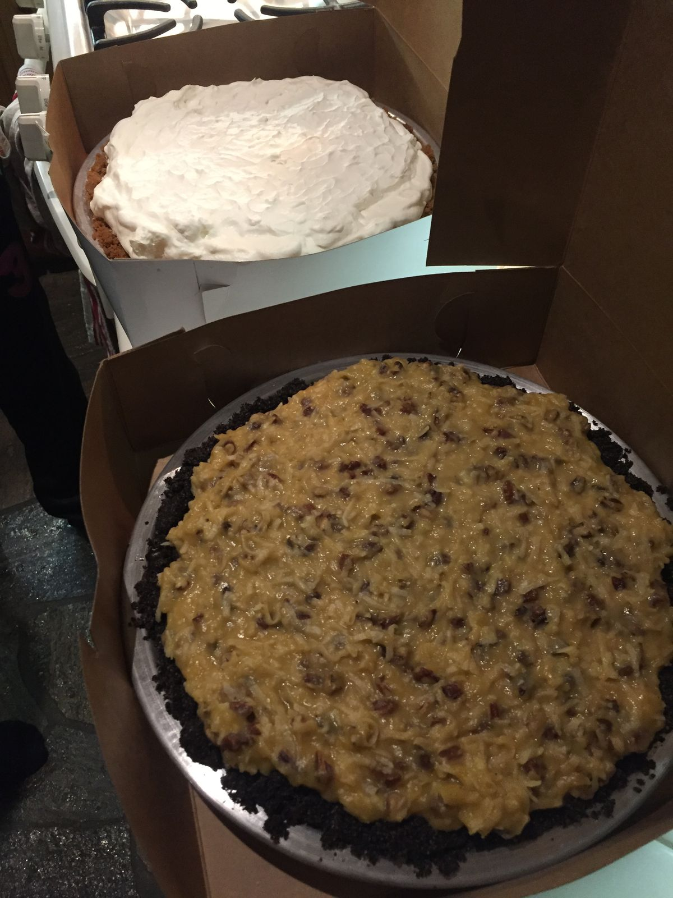
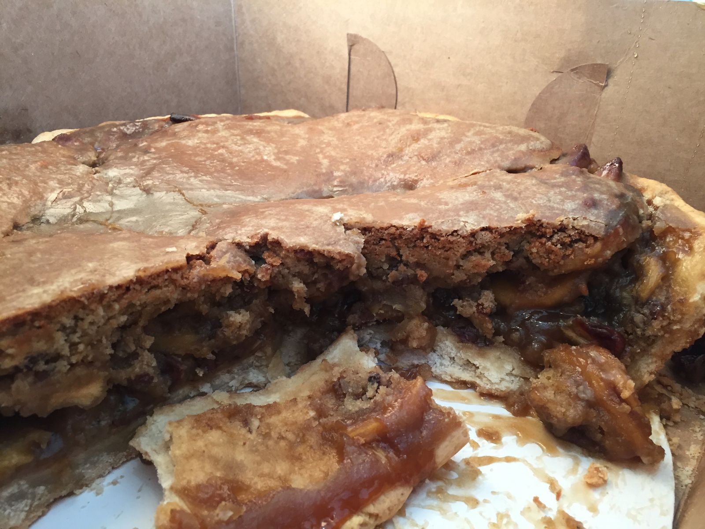
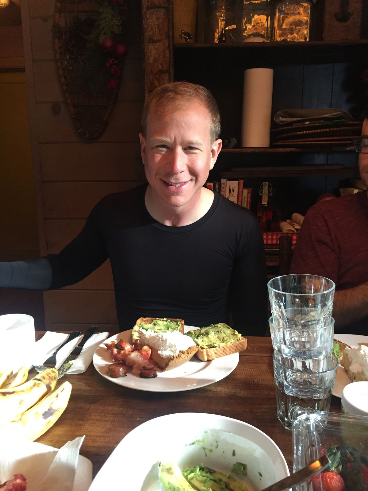
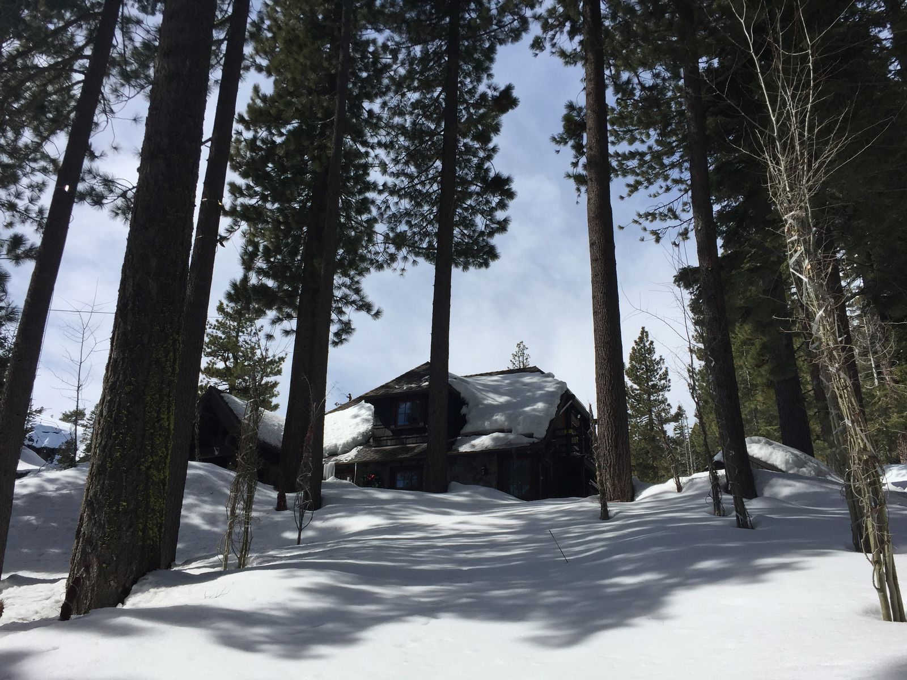

So Much Pie
For my friend's birthday, we celebrated with three different pies from Gregory's Gourmet Desserts. It's known as the best underground bakery in Oakland because it is literally underground. If you need good pie in the east bay, go to Gregory's.
The pies were massive and massively delicious. One pie, the Uptown Baby, was a custom order: an apple pecan pancake baked on top of an apple pie. We barely made a dent in these pies during dinner, so they were incorporated into breakfast the next day before we checked out of our Airbnb.



